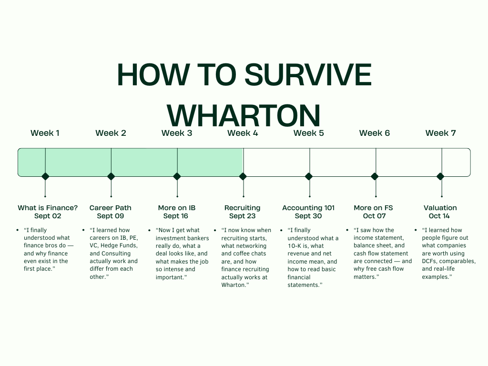

How to Survive Wharton
Your comprehensive guide to thriving at the Wharton School
Welcome to IBEC's comprehensive guide to succeeding at Wharton! This guide covers everything from academic strategies to networking tips, designed to help you make the most of your time at one of the world's top business schools.
Academic Excellence
Course Selection Strategy
- Core Requirements: Complete your core courses early to maximize flexibility for electives
- Popular Electives: Consider high-demand courses like MGMT 301 (Negotiations), FNCE 206 (Corporate Finance), and MKTG 212 (Marketing Management)
- Professor Research: Use Penn Course Review and talk to upperclassmen to identify the best professors
- Balanced Schedule: Mix quantitative and qualitative courses each semester
Study Strategies
- Study Groups: Form consistent study groups for challenging courses like Statistics and Accounting
- Office Hours: Attend professor and TA office hours regularly - they're underutilized resources
- Case Study Prep: For case-based courses, practice presenting and defending your analysis
- Time Management: Use the Pomodoro Technique during busy periods like midterms and finals
Networking & Professional Development
Building Your Network
- Alumni Connections: Leverage the Wharton Alumni Network - schedule 15-20 minute coffee chats
- Club Leadership: Join clubs early and aim for leadership positions by sophomore year
- Professor Relationships: Build genuine relationships with professors in your areas of interest
- Peer Networks: Your classmates will be future business leaders - invest in these relationships
Career Preparation
- Career Services: Start using Career Services early, not just for recruiting season
- Resume Building: Quantify your achievements and tailor your resume for each industry
- Interview Prep: Practice behavioral and technical interviews with career services and peers
- Internship Strategy: Apply broadly and use internships to explore different career paths
Financial Literacy & Planning
Managing Student Finances
- Budgeting: Create a realistic budget accounting for tuition, living expenses, and social activities
- Work-Study: Consider on-campus jobs that align with your career goals
- Scholarships: Apply for merit-based scholarships and grants throughout your time at Penn
- Financial Aid: Understand your aid package and reapply annually
Investment Fundamentals
- Emergency Fund: Build a 3-6 month emergency fund before investing
- Index Funds: Start with low-cost index funds for long-term wealth building
- Compound Interest: Understand the power of starting to invest early
- Risk Management: Never invest money you can't afford to lose
Mental Health & Wellness
Stress Management
- Work-Life Balance: Set boundaries and make time for activities you enjoy
- Exercise: Use Penn's excellent fitness facilities - exercise reduces stress and improves focus
- Sleep Schedule: Maintain consistent sleep patterns, especially during busy periods
- Mindfulness: Practice meditation or mindfulness techniques to manage anxiety
Support Resources
- Counseling & Psychological Services (CAPS): Free counseling services for all Penn students
- Academic Support: Tutoring and writing centers are available for academic assistance
- Peer Support: Join support groups or find study buddies for accountability
- Faculty Mentors: Identify faculty members who can provide guidance and support
Maximizing Wharton Opportunities
Unique Programs
- Wharton International Program: Study abroad or participate in global consulting projects
- Venture Initiation Program (VIP): Launch your own startup with university support
- Research Opportunities: Work with professors on research projects in your areas of interest
- Leadership Ventures: Apply for leadership development programs and retreats
Philadelphia Resources
- City Exploration: Take advantage of Philadelphia's rich history and culture
- Professional Events: Attend networking events and conferences in the city
- Volunteer Opportunities: Engage with local nonprofits and community organizations
- Internship Opportunities: Explore internships with Philadelphia-based companies
Essential Resources
Academic Resources
- Wharton Computing: Access to Bloomberg terminals and financial databases
- Lippincott Library: Specialized business library with research support
- Wharton Research Data Services (WRDS): Premier financial research platform
- Career Services: Resume reviews, interview prep, and job search support
Student Organizations
- IBEC: Join us for global business and economics insights!
- Wharton Investment & Trading Group (WITG): For finance and investment education
- Wharton Consulting Club: Case practice and consulting career preparation
- Wharton Entrepreneurship: For students interested in starting businesses
Final Thoughts
Success at Wharton isn't just about grades - it's about building relationships, developing skills, and positioning yourself for long-term career success. Take advantage of every opportunity, but remember to maintain balance and take care of your mental and physical health.
Remember: Your Wharton experience is what you make of it. Be proactive, stay curious, and don't be afraid to step outside your comfort zone. The connections you make and the skills you develop here will serve you throughout your career.
Questions about surviving Wharton? Reach out to IBEC members for advice and mentorship!